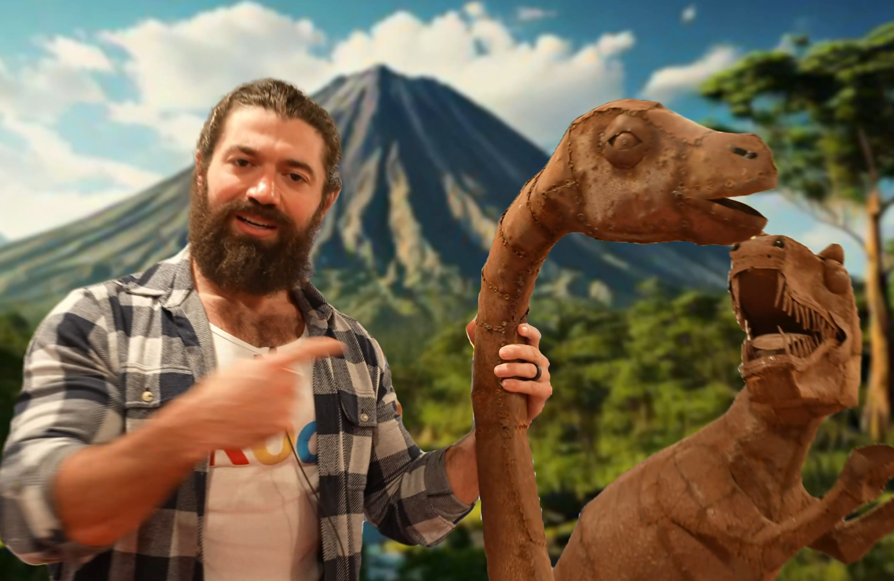

As a Paid Media Strategist for Acquisition.com, I was responsible for producing performance-driven video ads for YouTube and Meta to promote the Acquisition Workshop in Las Vegas. I operated as a one-man production unit, owning the full pipeline from script development and editing to final delivery, while also tracking performance and proposing new creative directions.
Working primarily with one-shot walk-and-talk footage of Alex Hormozi, I transformed raw material into high-retention content by structuring hooks, refining pacing, and enhancing each scene with kinetic text, visual effects, and rotoscoped elements. The role was highly iterative and experimental, focused on testing multiple formats, messaging angles, and hook variations to identify what performed best.

Every asset was delivered in three formats: 16:9 (YouTube), 1:1 (Meta), and 9:16 (Reels/Stories), requiring a flexible and scalable production approach. I built modular templates in After Effects that allowed for rapid iteration across different hooks and CTAs while maintaining brand consistency.
My workflow relied heavily on efficient editing systems and AI-assisted rotoscoping to isolate subjects, create clean compositions, and enhance visual clarity. This enabled fast turnaround times while maintaining a high level of polish across multiple ad variations.
A key part of the role involved repurposing testimonial footage into retargeting ads designed to establish authority and trust within the first few seconds. I also contributed to short-form content for Leila Hormozi, adapting edits to highlight key insights and deliver punchy, platform-native formats.
Due to NDA restrictions, the majority of this work cannot be publicly shared. Internally, I was relied on for fast execution, adaptability, and the ability to translate raw footage into high-performing creative under tight deadlines.
Below is the original video that secured the role, created from a raw asset folder and developed into a seamless, one-shot-style edit designed to feel like a single continuous take.